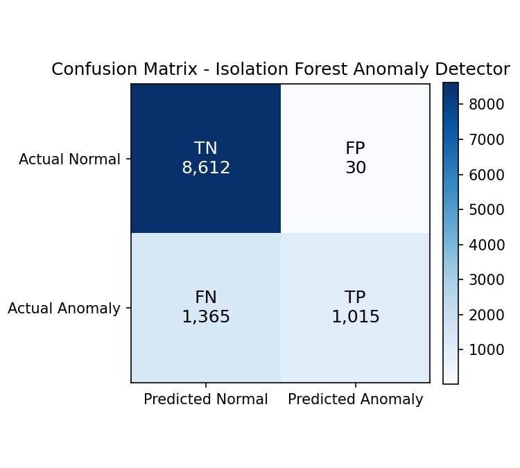
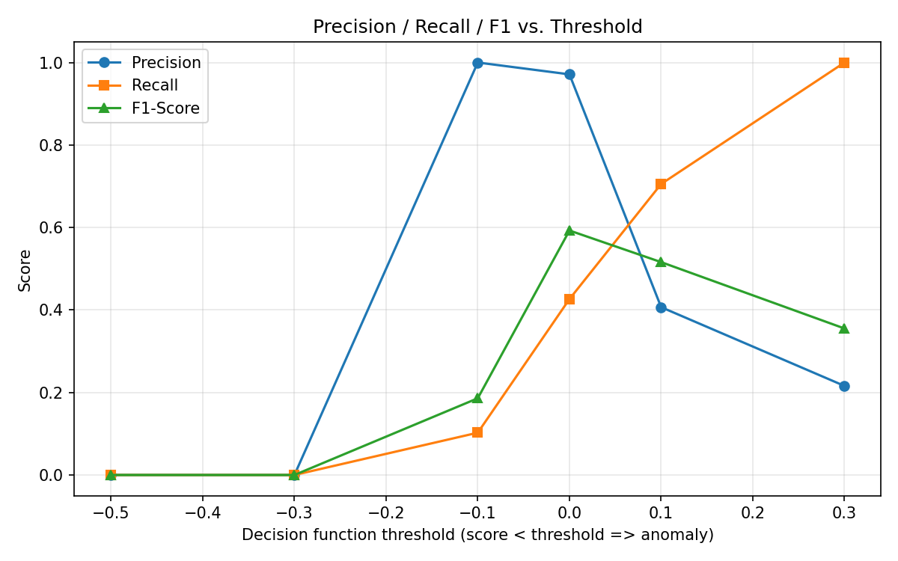

Dataset: network_traffic_dataset.csv test split (11,022 samples) | Decision threshold: 0.0 | Author: Muhammad Huzaif Amir
| Predicted Normal | Predicted Anomaly | Note | |
|---|---|---|---|
| Actual Normal | 8,612 | 30 | FPR: 0.3% |
| Actual Anomaly | 1,365 | 1,015 | Recall: 42.6% |

Interpretation: the model catches 42.6% of true attacks in the test set while generating a false-positive rate of 0.3% on normal traffic (roughly 3 false alarms per 1,000 normal events).
| attack_type | count | flagged_rate | note |
|---|---|---|---|
| PortScan | 561 | 0.000 | detection rate / recall for this attack type |
| Benign | 8642 | 0.003 | false-positive rate (should be low) |
| BruteForce | 331 | 0.079 | detection rate / recall for this attack type |
| WebAttack | 265 | 0.268 | detection rate / recall for this attack type |
| Botnet | 167 | 0.461 | detection rate / recall for this attack type |
| DoS | 962 | 0.777 | detection rate / recall for this attack type |
| Infiltration | 94 | 1.000 | detection rate / recall for this attack type |
Known test-set anomalies were perturbed with small, realistic modifications (10% Gaussian noise, ±10% feature scaling, and a combined attack) and re-scored with the same frozen model and scaler to see whether they still get flagged.
| Perturbation | Still Detected | Evasion Success Rate |
|---|---|---|
| Baseline (no perturbation) | 42.6% | — |
| +10% Gaussian noise | 51.1% | 48.9% |
| Scale ×0.9 | 36.4% | 63.6% |
| Scale ×1.1 | 50.0% | 50.0% |
| Combined noise + scale-down | 45.4% | 54.6% |
Robustness status: FRAGILE — averaged across perturbations, 45.1% of previously-flagged anomalies were still detected after modification (2,380 anomalies tested).
| Assumption | Value |
|---|---|
| Simulated daily events | 10,000 |
| Observed anomaly rate | 9.48% |
| Expected alerts/day | 948 |
| Assumed analyst capacity | 50/day |
| Manageable? | No |
Recommendation: Alert volume exceeds analyst capacity - raise the decision-function threshold (fewer, higher-confidence alerts) or add a triage/auto-close tier for low-severity anomalies.
| Window | Anomaly Rate |
|---|---|
| Week 1 (simulated, first half of test set) | 9.05% |
| Week 4 (simulated, second half of test set) | 9.91% |
Anomaly rate changed by 9.4% between the two windows - this is within the acceptable 20% drift threshold; no immediate retraining is required.
| threshold | tp | fp | fn | tn | precision | recall | f1 |
|---|---|---|---|---|---|---|---|
| -0.500 | 0 | 0 | 2380 | 8642 | 0.000 | 0.000 | 0.000 |
| -0.300 | 0 | 0 | 2380 | 8642 | 0.000 | 0.000 | 0.000 |
| -0.100 | 244 | 0 | 2136 | 8642 | 1.000 | 0.103 | 0.186 |
| 0.000 | 1015 | 30 | 1365 | 8612 | 0.971 | 0.426 | 0.593 |
| 0.100 | 1679 | 2448 | 701 | 6194 | 0.407 | 0.705 | 0.516 |
| 0.300 | 2380 | 8642 | 0 | 0 | 0.216 | 1.000 | 0.355 |

Generated automatically by evaluation.py — ArzensIntern Advanced Track, Assignment 05.